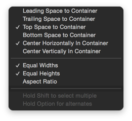

用户界面搭建
文件准备
- 新建
QRCodeViewController.swift&QRCode.storyboard - 在
Storyboard中添加UIViewController并且指定子类 - 在视图控制器上嵌入 UINavigationController

加载视图控制器
- 在
HomeTableViewController中增加scanQRCode函数，显示QRCode控制器
/// 显示扫描二维码界面
func scanQRCode() {
let sb = UIStoryboard(name: "QRCode", bundle: nil)
presentViewController(sb.instantiateInitialViewController()!, animated: true, completion: nil)
}
- 添加导航栏按钮监听方法
let btn = navigationItem.rightBarButtonItem?.customView as! UIButton
btn.addTarget(self, action: "scanQRCode", forControlEvents: UIControlEvents.TouchUpInside)
界面布局
- 添加素材
- 将
Navigation Bar的 Style 设置为Black 增加
UITabBar- 在之前版本中，分
二维码扫描和条形码扫描两种方式
- 在之前版本中，分
在屏幕中心添加扫描视图
- 垂直居中
- 水平居中
- 宽度：300
- 高度：300
- 背景色：clearColor
在扫描视图内部添加
边框图像视图，边框图片切片如下

Tabbar选择切换
- TabBar 的
Style修改为Black - 默认选中第一项
@IBOutlet weak var tabBar: UITabBar!
override func viewDidLoad() {
super.viewDidLoad()
tabBar.selectedItem = tabBar.items![0]
}
- 通过代理监听 Item 选中事件
func tabBar(tabBar: UITabBar, didSelectItem item: UITabBarItem!) {
heightConstraint.constant = * (item.tag == 0 ? 300 : 150)
}
冲击波动画
- 添加冲击波图片，并且设置相对于
扫描视图的参照

- 实现冲击波动画
override func viewDidAppear(animated: Bool) {
super.viewDidAppear(animated)
scanAnimation()
}
/// 冲击波动画
func scanAnimation() {
// 停止图层动画
scanImage.layer.removeAllAnimations()
// 设定动画初始约束
self.topScanConstraint.constant = -heightConstraint.constant
// 更新视图布局
self.view.layoutIfNeeded()
// 开始动画
UIView.animateWithDuration(2.0, animations: { () -> Void in
self.topScanConstraint.constant = self.heightConstraint.constant
UIView.setAnimationRepeatCount(MAXFLOAT)
self.view.layoutIfNeeded()
})
}
// MARK: - UITabBarDelegate
func tabBar(tabBar: UITabBar, didSelectItem item: UITabBarItem!) {
heightConstraint.constant = weightConstraint.constant * (item.tag == 1 ? 0.5 : 1)
scanAnimation()
}
注意：动画函数的前三句话非常重要！
细节处理
- 勾选扫描视图的
Clip Subviews属性 - 修改
冲击波初始Top约束数值 -300